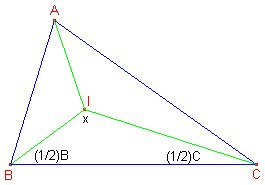
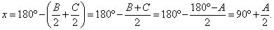

|
|
|
Vila, A., Callejo, M,L. (2004): Matemáticas para aprender a pensar Nacea (pág 136) |
Solución de Francisco Javier García Capitán

Podemos calcular el ángulo x formado por las bisectrices de los ángulos A y B:
Por tanto, A nunca puede ser un ángulo recto.